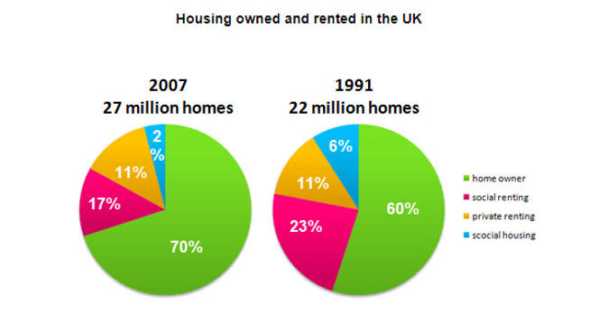

You should spend about 20 minutes on this task.
The pie charts below show the percentage of housing owned and rented in the UK in 1991 and 2007.
Summarize the information by selecting and reporting the main features and make comparisons where relevant.
Write at least 150 words.
You should spend about 40 minutes on this task.
Some people say that at all levels of education, from primary school to university, too much time is spent on learning facts and not enough on learning practical skills.
Do you agree or disagree?
You should write at least 250 words